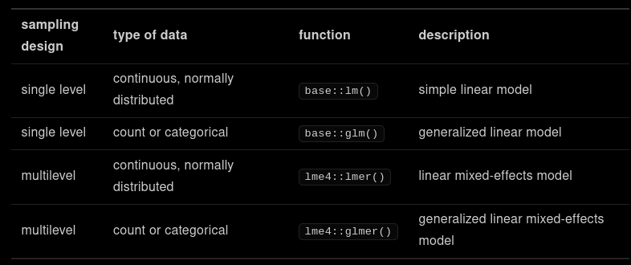
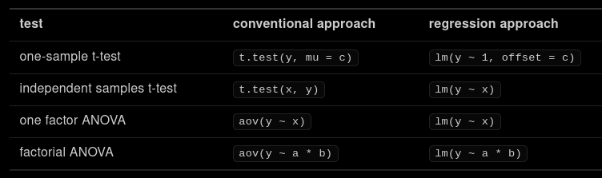
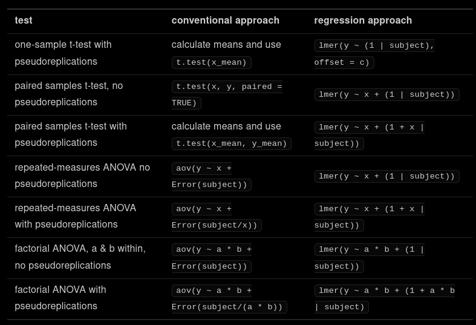

University of Glasgow



You ran a study looking alcohol consumption and simple RT. Data is stored in subjects and simple_rt. Subjects (sub) were randomly assigned to one of two groups (cond). One group drank alcohol before performing the task, while the other had a placebo drink.
You measured how quickly each subject pressed a button in response to a flashing light (RT). Each subject provided 8 measurements of response time. Remove data from subjects S01 and S11 before your analysis.
Download zip with the csv files
library("tidyverse")
subjects <- read_csv("simple_rt/subjects.csv",
col_types = "icc")
simple_rt <- read_csv("simple_rt/simple_rt.csv",
col_types = "icci")
combined <- subjects %>%
filter(sub != "S01",
sub != "S11") %>%
inner_join(simple_rt, "sub") %>%
select(sub, cond, RT)
subj_means <- combined %>%
group_by(sub, cond) %>%
summarise(mean_RT = mean(RT),
.groups = "drop") %>%
ungroup()
subj_means
# A tibble: 14 x 3 sub cond mean_RT <chr> <chr> <dbl> 1 S02 placebo 514. 2 S03 placebo 528. 3 S04 alcohol 507 4 S05 placebo 476. 5 S06 alcohol 450. 6 S07 placebo 488. 7 S08 placebo 411. 8 S09 alcohol 430. 9 S10 alcohol 458. 10 S12 alcohol 537. 11 S13 alcohol 500 12 S14 placebo 434. 13 S15 placebo 393. 14 S16 alcohol 425
t.test(mean_RT ~ cond, subj_means, var.equal = TRUE)
Two Sample t-test
data: mean_RT by cond
t = 0.35278, df = 12, p-value = 0.7304
alternative hypothesis: true difference in means is not equal to 0
95 percent confidence interval:
-46.21515 64.07230
sample estimates:
mean in group alcohol mean in group placebo
472.2500 463.3214
Level 1:
\(Y_{ij} = \beta_0 + \beta_1 X_{ij} + e_{ij} \)
Level 2:
\(\beta_0 = \gamma_{00} + S_{0i}\)
\(\beta_1 = \gamma_{10}\)
Variance Components
\( S_{0i} \sim N \left( 0, {\tau_{00}}^2 \right) \)
\(e_{ij} \sim N \left( 0, \sigma^2 \right) \)
factorAlways include random intercepts for any random factor (e.g., subjects) where you have multiple observations on the DV.
Y ~ (1 | subject)
Do I also need a random slope for factor A?
A is within-subjectsA
Y ~ A + (1 + A | subject)
What random slopes do I need for interaction ABC? (Barr ,2013)
Created by Dale Barr